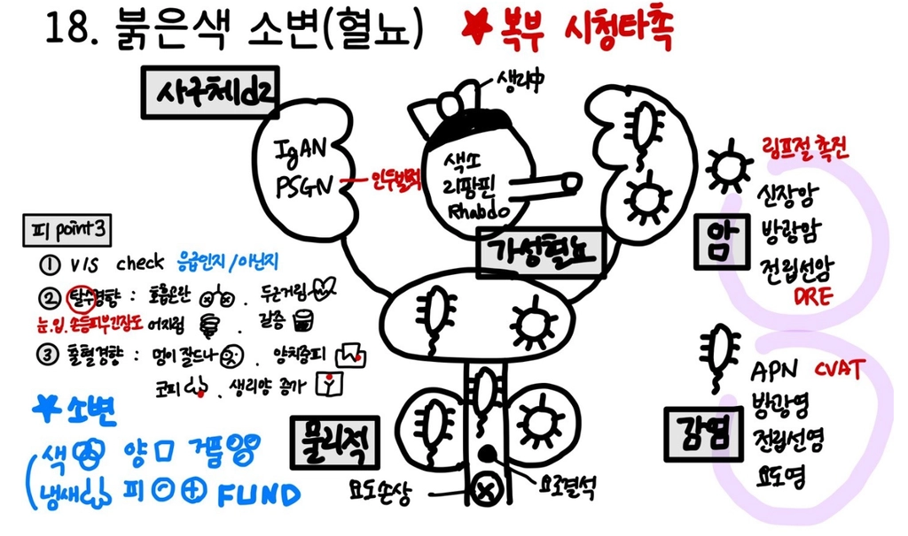

23. 붉은색 소변
| 의심질환 | 동반증상 |
상부 | IgA 신병증 IgAN | 상기도 감염 2-3일 후 발생하는 혈뇨 통증 없음 예전에도 있었음 + |
| 사슬알균 감염 후 토리콩팥염 PSGN | 상기도 감염 후 1~3주 지나 발생하는 핍뇨/혈뇨 부종, 체중증가 |
| 급성 신우신염 APN | 고열, 오한 배뇨통, 많은 혈뇨 CVAT + |
| 신장암 | 체중감소 옆구리 덩이, 옆구리 통증 |
| 얕은토리바닥막염 TBMD | 소아때부터 발생한 재발성 혈뇨 혈뇨 및 신질환의 가족력 AD |
| 용혈요독증후군 HUS | 소아환자 혈성 설사 이후 1~2주 지나 발생한 핍뇨, 혈뇨 황달, 피료, 출혈 경향성(PLT 감소) |
| 호두까기증후군 | 마른 여성 대량 혈뇨 |
하부 | 요로 결석 | 간헐적 옆구리 통증 반복 요로 감염, 재발성/이전에 요로 결석 진단 물을 많이 먹지 않음 CVAT + |
| 요로 감염(방광염) (골반진찰 필요) | 배뇨통, 빈뇨, 발열, 하복부 통증, 빈뇨, 질분비물, 가려움증 성관계 이후 발생한 증상 CVAT + |
| 방광암 | 흡연력 + 체중감소, 잔뇨감, 무통성 혈뇨 |
| 전립샘염 (DRE 필요) | 남성 잔뇨감, 소변줄기 가늘어짐, 열감 DRE 전립선 비대 + |
| 전립샘 암 (DRE 필요) | 남성 잔뇨감, 소변줄기 가늘어짐, 체중감소 DRE 전립선 비대 + |
| 요도 손상 (외성기 진찰 필요) | 외상력(성기 이물질 삽입 등) 및 성기 수술력 배뇨곤란, 배뇨통 소변 초반에 혈뇨, 적은 양 |
기타 | 리팜핀 | 치료 중인 결핵 환자 |
| 횡문근 융해 | 과도한 운동, 사우나 적색뇨, 근육통 고지혈증약(statin) 복용력 |
| 질출혈 | 신체 검진 시 질출혈 소견 |

평가목표 1) 실제 혈뇨인지 확인 2) 일과성 혈뇨 원인질환 감별 3) 지속성 혈뇨의 원인 장기 수준에 따라 감별 | ||||||||||||||||||||||
구체적인 성과 | ||||||||||||||||||||||
병력 청취
| 가성 혈뇨 | 음식: 비트, 블랙베리, 식용색소 | ||||||||||||||||||||
|
| 약물: 리팜핀(Tb 약물), 페나조피리딘(방광염 통증완화제), 클로프로마진(항정신병 약물) | ||||||||||||||||||||
|
| 요로계 이외의 출혈 혼입: 질출혈, 항문출혈 | ||||||||||||||||||||
|
| 내인성대사물질: 마이오글로빈뇨(횡문근융해증), 혈색소뇨(혈관내용혈) | ||||||||||||||||||||
| 일과성 혈뇨의 원인 | 생리적 자극(격렬한 운동, 발열, 외상), 경미한 요로감염, 전립선 자극(전립선염, 전립선비대증), 월경혈 혼입, 성관계 🡪 일과성 여부 확인하기 위해 수주 후 2-3회 반복 소변검사 시행 필요 *`환자 고령의 흡연자일 경우 일과성일지라도 방광암 의심 하에 주의 깊게 병력청취/검사 필요 | ||||||||||||||||||||
| 지속성 혈뇨의 특성과 동반증상파악 🡪 토리와 토리외 장기 수준 구별 |
| ||||||||||||||||||||
신체 진찰 | 출혈 성향 확인 | 멍이 잘 드는지, 양치할 때 잇몸에서 출혈이 있는지, 코피가 잘 나는지 확인 "평소 남들보다 멍이 쉽게 드나요?", "양치할 때 잇몸에서 피가 자주 나거나 잘 멈추지 않나요?", "특별한 이유 없이 코피가 자주 나나요?" 항응고제 복용력 확인 "심장 질환이나 뇌혈관 질환 예방을 위해 아스피린, 와파린, 혹은 항응고제(NOAC)/피를 묽게 해주는 약물을 드시고 계신가요?" 간질환 확인 "평소 간이 안 좋다는 이야기를 들으셨나요?" | ||||||||||||||||||||
| 혈뇨 유발요인, 원인질환 감별하는 신체진찰 | 기본 신체 진찰 | VS 확인 눈 🡪 빈혈 어지럼증/두근거림/호흡곤란 🡪 입 🡪 탈수 전신 사지 긴장도/부종 | |||||||||||||||||||
|
| 복부 진찰 | 배뇨통, 성교통, 하복부통증 발생 가능 하복부 덩이 촉진 가능 간, 복수 확인 CVAT 필수 요로계 이외 출혈 혼입/전립선 질환 의심시 DRE, 외성기 진찰 시행 | |||||||||||||||||||
| 환자 배려, 필요한 예절과 위생절차 지킴 | 환자 수치스럽지 않게 (진찰 동의, 설명, 불필요한 곳 가려주기) | ||||||||||||||||||||
진단 및 치료 | 원인에 따라 진단계획 수립 | 기본 검사 | 혈액검사 | 신장 기능 검사 혈액 응고 검사 전혈구 검사 전해질 검사, 간수치 검사 | ||||||||||||||||||
|
|
| 소변검사 |
| ||||||||||||||||||
|
|
| 영상검사 | 복부초음파, 방광경, IVP, 신장요관방광단순촬영술(KUB), 복부 CT | ||||||||||||||||||
| 원인 질환의 치료 계획 수립 | IgA 신병증 IgAN | 혈압조절(ACEi, ARB, Furosemide) 수분/염분제한 | |||||||||||||||||||
|
| 사슬알균 감염 후 토리콩팥염 PSGN | 혈압조절(ACEi, ARB, Furosemide) 수분/염분제한 추적관찰, 보존적치료 | |||||||||||||||||||
|
| 급성 신우신염 APN | 주사 또는 경구 항생제 치료(Ceftriaxone, Ciprofloxacin) | |||||||||||||||||||
|
| 신장암 | 신장 절제술 | |||||||||||||||||||
|
| 얕은토리바닥막염 TBMD | 항바이러스제, 보존적 치료(수액, 전해질 교정) | |||||||||||||||||||
|
| 용혈요독증후군 HUS | 응급 개복 수술 | |||||||||||||||||||
|
| 호두까기증후군 | 체중증량 | |||||||||||||||||||
|
| 요로 결석 | 크기에 따라 < 5mm 대기요법, < 2.5cm 체외충격파쇄석, > 2.5cm 경피적 신쇄석술 | |||||||||||||||||||
|
| 요로 감염(방광염) (골반진찰 필요) | 항생제(Ciprofloxacin) | |||||||||||||||||||
|
| 방광암 | 요도경유절제술, 방광절제술 방사선치료, 항암치료 | |||||||||||||||||||
|
| 전립샘염 (DRE 필요) | 항생제 IV, 배뇨곤란 지속 시 알파차단제 | |||||||||||||||||||
|
| 전립샘 암 (DRE 필요) | 수술, 방사선치료 | |||||||||||||||||||
|
| 요도 손상 (외성기 진찰 필요) | 수술 | |||||||||||||||||||
|
| 리팜핀 | 안심시키기 | |||||||||||||||||||
|
| 횡문근 융해 | 수액공급, 이뇨제 | |||||||||||||||||||
|
| 질출혈 |
| |||||||||||||||||||
| 급성 조치 | 어지러움, 두근거림 🡪 탈수 증상 🡪 수액 치료 필요 횡문근 융해증 🡪 절대 안정 🡪 핍뇨, 오심, 구토 등 증상 보이며 AKI으로 악화 시 혈액 투석 필요 | ||||||||||||||||||||
환자 교육 | 환자 교육 | 생활습관 개선 | 식사 규칙적으로 먹기, 맵고 자극적인 음식 피하기, 야식 피하기 과일과 채소 등 지방은 적고 섬유질이 많은 음식 많이 먹기 금연 금주 커피/탄산음료 줄이기 음식 충분히 씹어 삼키기, 과식하지 않기 적절한 유산소 운동과 체중 조절, 과도한 운동과 사우나는 자제 물 1.5L 정도 마시기, 소변 참지 말기 당뇨 조절 혈압 조절 철저히 🡪 재발 위험성 경고 적당한 휴식/수면, 스트레스 관리 진통제 등 약물 사용 전 의사와 상담 | |||||||||||||||||||
|
| 추가적 검사 설명 | 추적 소변검사 필요성 : 3번 이상 현미경적 혈뇨시 혈뇨로 진단 요로결석: 충분한 수분 섭취, 구연산 섭취, 염분/옥살산/단백질 섭취 제한 어지러움, 두근거림 등 탈수 증상 발생시 즉시 내원 필요 | |||||||||||||||||||
질환 | 질환 설명 | 병력청취 | 신체진찰 | 검사 | 치료 |
IgA 신병증 IgAN 1 | 감기나 편도염 직후 면역물질이 콩팥에 쌓여 바로 혈뇨 | 상기도 감염 2-3일 후 발생하는 혈뇨 통증 없음 재발성, 젊은 나이대 | 소변검사, 신장조직검사 | 혈압조절(ACEi, ARB, Furosemide) 수분/염분제한 | |
사슬알균 감염 후 토리콩팥염 PSGN 3 | 사슬알균에 걸린 뒤 몇 주 지나 면역반응이 콩팥을 막아 혈뇨 | 상기도 감염 후 1~3주 지나 발생하는 핍뇨/혈뇨 부종, 체중증가 | 소변검사, 신장조직검사 | 혈압조절(ACEi, ARB, Furosemide) 수분/염분제한 추적관찰, 보존적치료 | |
급성 신우신염 APN 1 | 세균이 신장에 침투해 염증, 출혈 | 고열, 오한 배뇨통, 많은 혈뇨 CVAT + | 복부 CT, 소변검사, 신장초음파, 전혈구검사 | 주사 또는 경구 항생제 치료(Ceftriaxone, Ciprofloxacin) | |
신장암 | 신장 종양에서 혈관이 파열 | 체중감소 옆구리 덩이, 옆구리 통증 | 복부 CT, 소변검사, 신장초음파 | 신장 절제술 | |
얕은토리바닥막염 TBMD | 콩팥에서 필터 역할을 하는 '토리(사구체)'의 막이 남들보다 조금 얇게 태어난 경우 | 소아때부터 발생한 재발성 혈뇨 혈뇨 및 신질환의 가족력 AD | 복부 CT | 항바이러스제, 보존적 치료(수액, 전해질 교정) | |
용혈요독증후군 HUS | 주로 오염된 음식을 통해 독소에 감염되어 발생하며, 적혈구가 깨지고 콩팥 기능이 급격히 떨어지는 응급 질환 | 소아환자 혈성 설사 이후 1~2주 지나 발생한 핍뇨, 혈뇨 황달, 피료, 출혈 경향성(PLT 감소) | 복부 CT | 응급 개복 수술 | |
호두까기증후군 | 왼쪽 콩팥에서 나가는 정맥이 우리 몸의 큰 동맥 두 개 사이를 지나가는데, 이 동맥들이 마치 '호두까기 기계'처럼 정맥을 꽉 누르고 있는 상태 | 마른 여성 대량 혈뇨 | 소변검사, 복부 CT | 체중증량 | |
요로 결석 2+1 | 돌이 요로 점막을 긁어 상처 | 간헐적 옆구리 통증 반복 요로 감염, 재발성/이전에 요로 결석 진단 물을 많이 먹지 않음 CVAT + | 신장요관방광단순촬영술(KUB), 골반 CT, 소변검사 | 크기에 따라 < 5mm 대기요법, < 2.5cm 체외충격파쇄석, > 2.5cm 경피적 신쇄석술 | |
요로 감염(방광염) 0+1 (골반진찰 필요)
| 방광·요도에 세균이 염증을 일으켜 점막에서 피 | 배뇨통, 빈뇨, 발열, 하복부 통증, 빈뇨, 질분비물, 가려움증 성관계 이후 발생한 증상 CVAT + | 소변검사, 소변배양검사, 혈액배양검사 | 항생제(Ciprofloxacin) | |
방광암 2+1 | 방광 종양이 자라며 혈관이 터져 무통성 혈뇨 | 흡연력 + 체중감소, 잔뇨감, 무통성 혈뇨 | 방광경검사, 소변검사, 신장요관방광단순촬영술(KUB) | 요도경유절제술, 방광절제술 방사선치료, 항암치료 | |
전립샘염 (DRE 필요) | 전립샘 염증으로 혈관이 자극·파열 피 섞인 소변 | 남성 잔뇨감, 소변줄기 가늘어짐, 열감 DRE 전립선 비대 + | 골반 CT, 소변검사, 직장경유초음파 | 항생제 IV, 배뇨곤란 지속 시 알파차단제 | |
전립샘 암 (DRE 필요) | 전립샘 암세포가 혈관을 침범해 무통성 혈뇨 | 남성 잔뇨감, 소변줄기 가늘어짐, 체중감소 DRE 전립선 비대 + | 골반 CT, 소변검사, 직장경유초음파 | 수술, 방사선치료 | |
요도 손상 (외성기 진찰 필요) | 외상으로 요도가 찢겨 피가 소변에 섞여나옴 | 외상력(성기 이물질 삽입 등) 및 성기 수술력 배뇨곤란, 배뇨통 소변 초반에 혈뇨, 적은 양 | 골반 CT, 소변검사 | 수술 | |
리팜핀 | 항결핵제로 소변 색이 붉게 변함 실제 혈뇨는 아닌 약물 착색 | 치료 중인 결핵 환자 | 소변검사 | 안심시키기 | |
횡문근 융해 1+1 | 근육이 파괴되며 나온 미오글로빈 소변을 붉거나 갈색 | 과도한 운동, 사우나 적색뇨, 근육통 고지혈증약(statin) 복용력 | 혈중 크레아틴키나아제, 심전도 | 수액공급, 이뇨제 | |
질출혈 | 질출혈이 소변에 섞인 것 여성의 요도구와 질 입구는 매우 가까이 위치 | 신체 검진 시 질출혈 소견 생리 중 소변과 상관 없이 속옷에 피가 묻어있는 경우 소변을보기 시작할때만 잠깐 | 중간뇨 재검사 카테터 소변 신체진찰 |
| |
자기소개/환자확인/환자동의/활력징후 “진료 대기 시간이 길었는데 오래 기다리시느라 고생 많으셨습니다./몸도 좋지 않은데 병원까지 오셔서 기다리시느라 고생이 많으셨습니다.” “혈뇨 증상을 정확히 파악하기 위해서는 실례지만 배뇨 습관에 대해서도 몇 가지 여쭤봐야 합니다. 진료를 위해 꼭 필요한 질문이니 편하게 말씀해 주시면 많은 도움이 될 것입니다.” | ||
O | 언제부터 갑자기/서서히 | |
L | 어디가 아픈지/”아픈데 손으로 짚어보세요.” 치골상부 > 방광염 옆구리 > APN, 결석 다른 곳으로 이동하는지/뻗치는지 | |
D | 지속/있다없다 얼마나 자주(하루에 화장실 몇 번 가고 그 중 피는 몇 번 나왔는지) | |
Co | 악화 | |
Ex | 이전에도? 🡪 치료 | |
C | 개방형: “소변에 피가 어떻게 나왔는지 자세히 설명해주시겠어요?” 가성 혈뇨 감별: 비트/블랙베리/식용색소/결핵약(리팜핀) 양 /색(선홍색,검붉은색) / 시기(소변 초반,끝) /덩어리(피떡, 거품) 🡪 피딱지/덩어리 있으면 하부요로계 얼마나 심한지: NRS, QoL 🡪 “많이 힘드셨겠습니다.” | |
A | 개방형: “다른 불편한 곳은 없으세요? 네. 그럼 제가 몇가지 자세하게 확인해보겠습니다.” | |
| 전신 | F/C/Fatigue/WL/식욕부진/부종 |
| 출혈 경향 | 멍/양치할 때 잇몸 피/코피 |
| 탈수 | 두근거림/호흡곤란/어지럼증 |
| 비뇨기계 | Frequency/Urgency/Nocturia/Dysuria/-Hesitancy/Intermittency/Straining/Retention 빈뇨/절박뇨/야간뇨/배뇨통/주저뇨/가늘어짐/복압배뇨/잔뇨감 |
| 외음부 | 외음부 통증/가려움증/요도분비물/질분비물/성교통 |
F | 개방형: “증상이 어떨 때 좀 괜찮아지고/심해지나요?” | |
| 최근 심한 운동/근육통/사우나/과음 > 횡문근융해증 최근 감기/인후염 🡪 정확히 언제 > PSGN, IgA 물 많이/식사 어떻게 → 요로결석 | |
E | 건강검진 요로결석 | |
요약 및 PPI | “지금까지 말씀하신 것을 요약하자면 ~.” “제가 질문을 많이 했는데 잘 대답해주셔서 감사합니다. 몇가지만 더 여쭙도록 하겠습니다.” | |
외 | 수술/복부, 요도 외상/입원(카테터 삽입 여부) | |
과 | HTN/DM/고지혈증/결핵/간 신장/혈액응고 | |
약 | 약물/영양제/한약 결핵약/소염제/항고혈압제/당뇨약/피묽게하는약 🡪 복용 제대로 하고 있는지 | |
사 | 술/담배/커피/직업/스트레스 운동: 규칙적/일주일 횟수 식사: 물/식사 | |
가 | 비슷한 증상 신장/비뇨기계/혈액응고질환 | |
여 | 월경력: 마지막 생리 시작일 🡪 기간/주기/규칙성/양/월경통 질분비물/성교통 | |
요약 및 PPI | “네. 이로써 문진은 마치도록 하겠습니다.” “혹시 더 말씀해주시고 싶은 것 있으실까요? 편하게 말씀해주세요.” | |
환자동의 “정확히 어디가 아픈지 확인하기 위해 신체진찰을 진행해야 합니다. 과정 중에 신체 노출과 접촉이 있을 수 있으나, 불편하시지 않게 필요한 부분만 노출하고 최대한 신속히 확인하겠습니다. 괜찮으실까요? 중간중간 불편하시면 언제든 말씀해주세요.” | |
기본 신체진찰 | |
VS 확인 | |
눈 | 빈혈/황달 |
입 | 탈수 |
목 | 림프절 |
피부 | 긴장도/오목부종 |
복부 진찰 "많이 긴장되시죠? 숨을 크게 들이마시고 편안하게 내뱉으시면 검사가 훨씬 수월해집니다. 잘하고 계십니다." 많이 아파할 경우 🡪 “자세히 보고 정확히 진찰하려다보니 신체 검진 과정에서 불편을 드린 것 같습니다.” | |
시 | 자세 누워서 무릎 굽힘, “명치부터 골반까지 노출하고 다른 부위는 가려드리겠습니다.” “아픈 곳 손으로 짚어보세요.” 외상/수술 흔적/팽만 |
청 | “청진기 손으로 데우긴 하는데 차가울 수 있습니다. 불편하면 말씀해주세요.” 배 4군데(3초)+명치+신동맥 |
타 | 4군데 이상, 아픈 곳 마지막으로 |
| 간: 세로로 Rt. Mid 쇄골 라인 따라 🡪 유두부터 배꼽 아래까지 일직선 두드리기 |
| 복수: 가로로 배 가운데 가로로 쭉 두드리기 🡪 왼쪽으로 벽보고 돌아서 누워 배 아래쪽 누워있는 부분 두드리기 |
촉 | 4군데 이상 얕게/깊게, 아픈 곳 마지막으로 압통 호소 🡪 반동압통도 시행 |
| 종괴/방광비대 |
특이 검사 | 비뇨: CVAT (+) + 신동맥 청진 |
DRE (남자 환자) | |
안내 | “항문괄약근과 직장 내 병변이 있는지 확인하는 검사입니다. 항문에 손가락 넣어서 만져보는 검사 불편하실 수 있지만 진단을 위해 필요한 과정입니다. 괜찮으실까요?” |
자세 | 등지고 누워+왼다리는 그냥 피고+오른다리는 가슴에 붙도록 90도 구부리고 새우등 자세+엉덩이는 최대한 뒤로 빼서 새우등자세 |
PPI | “옷 내려주시고, 불필요한 부분은 가려드리겠습니다. 안보여서 불안하겠지만 모든 과정 말로 설명하고 진행할테니 걱정 안하셔도 됩니다.” |
시진 | 항문 주변 덩이 샛길 궤양 염증 없음 변보듯 힘주기 |
촉진 | 항문 주변 덩이/압통 |
손가락 | “손가락 넣겠습니다. 젤 차갑고 불편하세요.” 🡪 변 참을 때처럼 힘 주고 힘 빼기 “빼겠습니다. 끝났습니다. 고생 많으셨고 닦으실 수 있도록 여분 휴지 챙겨드리겠습니다.” |
보고 | 변색성상+ 병변: 항문직장선 기준 *cm상방+*cm크기+*시 방향 둥근모양+매끄럽/울퉁불퉁경계+고정/유동+압통 |
골반진찰 (여자 환자) | |
안내 | “질 안쪽 손가락을 넣어서 자궁 및 부속기의 운동성/압통/종괴 유무 확인하는 검사입니다. 불편하실 수 있지만 진단을 위해 필요한 과정입니다. 괜찮으실까요?” 생리중/이전 성경험? 검사 이전 24시간 내: 질정/질세척/성관계/탐폰? 검사 이후 48시간 이후 : 질정/질세척/성관계/탐폰? |
자세 | 옷 갈아입고 침대 누움 + 다리 M자 + 발은 발판 불필요한 부분은 가려드리겠습니다 |
골반 내진 | “외음부에 손이 닿을건데 너무 놀라지 마세요.” 시진: “먼저 한번 보겠습니다. 발적/궤양 확인하겠습니다.” “손가락을 질 안으로 넣겠습니다. 놀라지 마세요.” “자궁경부 운동성/압통/종괴 확인하겠습니다.” “누를 때 아픈가요?” “손가락 천천히 빼겠습니다. 놀라지마세요. 묻어 나온 질분비물 확인하겠습니다.” |
마무리 | “신체진찰 끝났습니다. 정리하시고 다시 돌아와주시면 됩니다. 협조해주셔서 감사합니다.” |
진단검사 | |
혈액검사 | 신장 기능 검사 혈액 응고 검사 전혈구 검사 전해질 검사, 간수치 검사 |
소변검사 |
|
영상검사 | 복부초음파, 방광경, IVP, 신장요관방광단순촬영술(KUB), 복부 CT |
치료 | |
IgA 신병증 IgAN | 혈압조절(ACEi, ARB, Furosemide) 수분/염분제한 |
사슬알균 감염 후 토리콩팥염 PSGN | 혈압조절(ACEi, ARB, Furosemide) 수분/염분제한 추적관찰, 보존적치료 |
급성 신우신염 APN | 주사 또는 경구 항생제 치료(Ceftriaxone, Ciprofloxacin) |
신장암 | 신장 절제술 |
얕은토리바닥막염 TBMD | 항바이러스제, 보존적 치료(수액, 전해질 교정) |
용혈요독증후군 HUS | 응급 개복 수술 |
호두까기증후군 | 체중증량 |
요로 결석 | 크기에 따라 < 5mm 대기요법, < 2.5cm 체외충격파쇄석, > 2.5cm 경피적 신쇄석술 |
요로 감염(방광염) (골반진찰 필요) | 항생제(Ciprofloxacin) |
방광암 | 요도경유절제술, 방광절제술 방사선치료, 항암치료 |
전립샘염 (DRE 필요) | 항생제 IV, 배뇨곤란 지속 시 알파차단제 |
전립샘 암 (DRE 필요) | 수술, 방사선치료 |
요도 손상 (외성기 진찰 필요) | 수술 |
리팜핀 | 안심시키기 |
횡문근 융해 | 절대 안정 🡪 핍뇨, 오심, 구토 등 증상 보이며 AKI으로 악화 시 혈액 투석 필요 |
질출혈 |
|
응급 | 출혈, 탈수증상 (어지럽거나 숨차고 두근거림 등) 있을시 병원에 바로 오세요 |
생활습관 개선 | 적절한 유산소 운동과 체중 조절, 과도한 운동과 사우나는 자제 [요로 결석 예방] 물 1.5L 정도 마시기, 소변 참지 말기 혈압 조절 - IgA 신병증, PSGN등 급성 신염증후군에서 혈압 조절이 중요 맵고 자극적인 음식 피하기 금연 금주 커피/탄산음료 줄이기 당뇨 조절 혈압 조절 철저히 🡪 재발 위험성 경고 적당한 휴식/수면, 스트레스 관리 |
추가적 검사 설명 | 추적 소변검사 필요성 : 3번 이상 현미경적 혈뇨시 혈뇨로 진단 요로결석: 충분한 수분 섭취, 구연산 섭취, 염분/옥살산/단백질 섭취 제한 어지러움, 두근거림 등 탈수 증상 발생시 즉시 내원 필요 |
[도입] 갑자기 소변에서 피가 나와 많이 놀라셨을 것 같습니다.
[진단] 지금 ○○○님께 가장 의심되는 진단명은 '-'입니다. -는 ~한 질병입니다.
*암 의심될 경우 : 그러나 체중이 최근 감소하고 식욕 변화도 있으면서 평소 음주, 흡연력도 있으셔서 🡪 아직 확실하지 않지만 암의 가능성을 배제할 수는 없습니다.
[감별] 하지만 다른 -이나, -이 있어도 이러한 증상이 나타날 수 있습니다.
[진단] 따라서 정확한 진단을 위해, 우선 기본적인 혈액검사로 신장 기능 검사/혈액 응고 검사/전혈구 검사/전해질 검사,/간수치 검사, 소변검사, 영상검사로 복부초음파/방광경/IVP/신장요관방광단순촬영술(KUB)/복부 CT을 시행해 확인해봐야 합니다.
[치료] -으로 진단될 경우 치료는 ~.
[교육] 3번 이상 현미경적 혈뇨시 혈뇨로 진단되기 때문에 이후에도 계속 소변검사를 반복적으로 해야하고, 어지럽거나 두근거리거는 탈수 증상 혹은 소변에 피가 더 나오거나 하면 즉시 내원하세요. 그리고 생활 속에서 적절하게 운동을 해 주시고, 물을 많이 드시고, 혈압/당뇨 관리를 철저히 하시고, 금연과 금주를 해주신다면 증상 완화에 더 도움이 되실 것입니다
[질문] 궁금한 점이 있으시다면 편하게 물어보세요. 없으시다면, 이것으로 진료를 마치겠습니다. 수고 많으셨습니다.